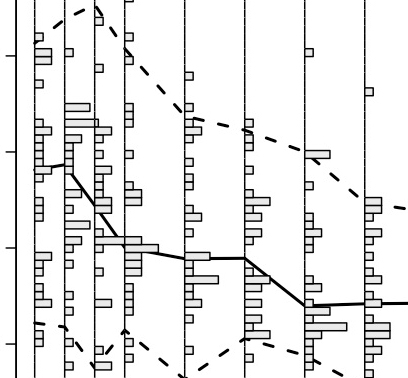

'Slug' Plot
Quantiles, Boxes, and Histograms
Uses

- To display the list below according to a time profile
- Quantile Ranges
- Distribution of the Y axis at each individual recorded time point
- Better view of a Box and Whisker plot with respect to the median of the data
Notes
- Can not be used the Variations (produced with Base graphics, not lattice)
- The 'Slug' name comes from the graphic where the idea was modeled from. It looks like a slug.
- All data must be ready to plot with not filtering
- Quantile Ranges may be supplied by the user
- If the quantiles are supplied by the user, they are from a totally different matrix.
- The bars in the distributions are relative to each other, even between different time points
- The dot in the boxplot is the median, not the mean
- IDs can be named when the IDs outside the Quantile Ranges
- Should be plotted with TIME on the X axis
- All Data being plotted must satisfy all requirement within the 'Data Sets' tab to work properly
Examples
Arguments
- column.x
- - Column name where X values of points that will be plotted. Must be in "quotes".
- column.y
- - Column name where Y values of points that will be plotted. Must be in "quotes".
- outlier.ids
- - Logical or Character.
- If FALSE, IDs are not plotted outside the quantile intervals
- If a character string, it must be the column name where IDs of points that will be plotted. Must be in "quotes".
- data
- - Matrix that contains the 'column.x', 'column.y', and 'outlier.ids', if applicable
- quantile.data
- - Matrix that contains the lower, middle, and upper quantiles, if applicable
- - May not be supplied if the quantiles are calculated
- quantile.lines
- - Default to "calculate". This is where the function calculates the quantiles for you.
- - If the quantile.data is supplied, 'quantile.lines' must be a vector containing the lower, middle, and upper quantile data. Must be given in this order and each column name must be in quotes
- quantile.type
- - Specifies what method should be used for calculating the quantiles. See the Documents for more information.
- number.of.bars
- - Number of bars for the Y axis
- bar.col
- - Color of the bars
- boxwex
- - A scale factor to be applied to the narrowness of the Box and Whisker plots on top
- points.mean
- - Logical. Tells function to plot the mean points in the top plot
- xlab1
- - X axis label
- ylab1
- - Y axis label for the bottom plot
- ylab2
- - Y axis label for the top plot
- main
- - Title for the graphic
- line.types
- - The 'lty's for the quantiles, c(lower,middle,upper)
Base Code for All Slug Plot Examples
Please source this file to obtain the 'Slug' function
Please see the examples above